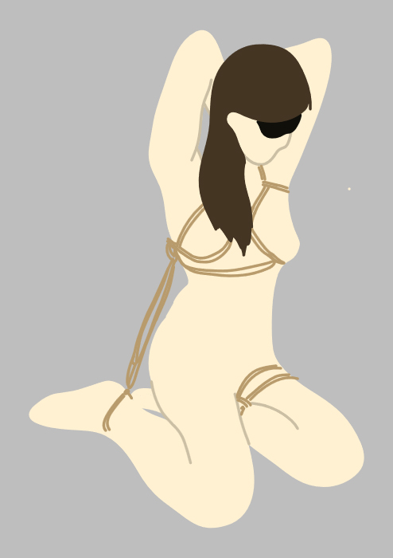

What Is B.A.C.K.?
Bozeman Area Community Kink. Founded in 2020, B.A.C.K. is a kinky community serving the Gallatin Valley area with kink education, discussions, and kink oriented events. We welcome all open-minded adults (who are aged 18 and over and are out of high school), and support the right of all adults to engage in risk aware and consensual activities - we believe that sensuality and sexuality are a fundamental aspect of the human experience, so everyone should have the right to safely and consensually express their kink within the boundaries of the law without judgment. We support all people regardless of gender identity and expression, sexual orientation, race, preference, disability, or age. We do NOT condone bigotry.
If you are wondering about parties, we currently do not have a hosting space. We are looking to find one, but appreciative of pointers. In the meantime, we use our coffee events to bring our community together.
Get Free QuoteHow To Get Started
-
01
Connect with us
If this is your first time attending a B.A.C.K. event, please reach out to us via email or our fetlife page to start the vetting process.
-
02
Attend your first meeting
Come join us at our next coffee and bring your questions! Feel free to bring snacks, plushies, knitting, or whatever else makes you comfortable.
-
03
Keep coming back
Stay in the loop by following our fetlife page or checking the events page on this website.
Frequently Asked Questions
Have questions about who we are? Look below to see if we have an answer to your question.
-
Coffees are group meetups where we discuss kink, sexuality, and other topics of interest. Come with a question in mind! All are welcome to attend, but please be aware that these are adult discussions and all attendees must be 18 years or older AND out of highschool.
-
Coffees are two hours long. Generally, the first hour is a discussion on a topic of interest, and the second hour is a social hour where attendees can mingle.
-
Coffees are free to attend. We ask that you RSVP on fetlife or shoot us an email. Donations are welcome - they help us bring educators in!
-
We meet twice a month; the first and third Monday***. Check our events page for more information.
-
In all likelihood, no. Coffees are not meant to set up romantic connections, and we do not facilitate sexual encounters. We do not condone sexual harassment or assault of any kind. Please be respectful of others and their boundaries.
-
To get the address for coffees, please reach out to us via email or our fetlife page. We will provide you with the address and any other information you need after you are vetted. We do not post the address publicly for safety reasons.
-
Eveyone has a yum in kink. Sometimes, someones yum is your yuk. If something is making you uncomfortable, use your two feet to remove yourself from the convversation. No justification needed, just see yourself somewhere you feel safe.
-
Aftercare is the practice of providing emotional and physical support to individuals after engaging in sexual activities. It's an important aspect of responsible sexual behavior and helps ensure the well-being of all parties involved.
Don’t see the answer you need?
That’s ok. Just drop a message and we will get back to you ASAP.
Contact us